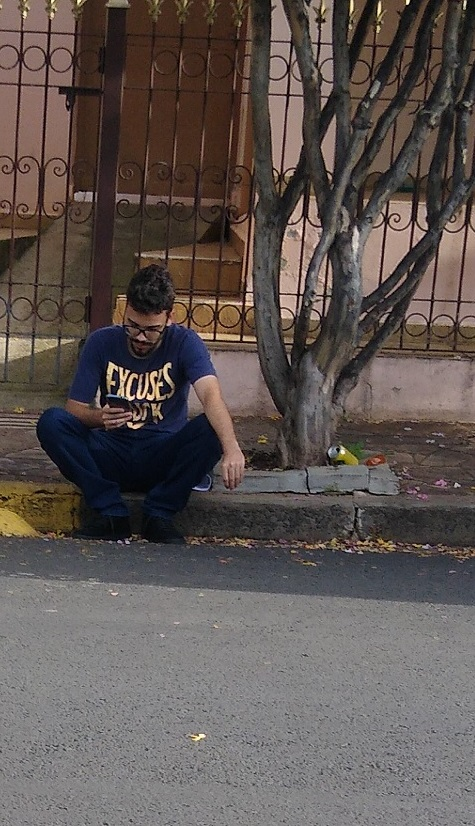
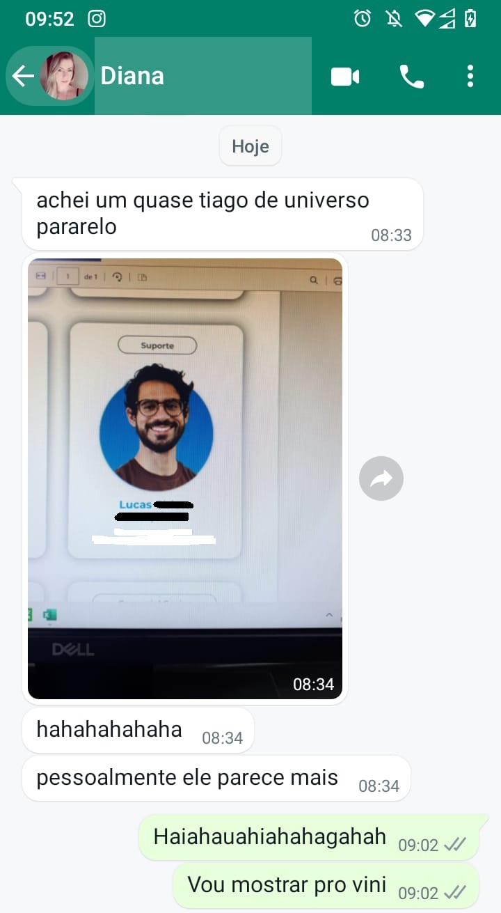

A primeira aparição suspeita, data o ano de 2022, ela ocorreu numa retro de um conhecido, nesse momento a crise pandêmica que avalassava o mundo havia amenizado, a imagem foi encaminhada para um dos mais fieis entre os amigos de Tiago.
Após sete meses apareceram mais duas versões, foi onde começamos a desenvolver duas teorias:
1. O TiagoVerso havia sido dissimado e os sobreviventes refugiaram-se para este universo.
2. Algumas versões foram encaminhados do TiagoVerso para este universo na missão de conter a pandemia e salvar o mundo! Mas algumas imagens nos levavam a crer que algumas versões haviam falhado, uma sucumbia aos holofotes e a fama,  outra versão sucumbia a uma droga que o consumia tanto quanto: o craque!
outra versão sucumbia a uma droga que o consumia tanto quanto: o craque! 
No mês seguinte avistamos quem imaginamos ser o Lider. Ele estava se comunicando e apareceu aqui através de um computador, não há provas, evidências ou informações o suficiente para afirmar se o acesso foi feito deste universo ou do próprio TiagoVerso! Algo que nos faz refletir muito sobre as possibilidades de comunicação e interação entre os universos...
No mês seguinte nossas teorias sobre possibilidades de interação entre universos se expandiram exponencialmente e colossalmente! Foi avistado um elemento que aprensentou todos os requisitos que comprovaria ser a união do ItaloVerso e o TiagoVerso! Vocês podem imaginar o quão entusiasmados ficamos?!

Foi quando mais pessoas despertaram em curiosidade e começaram a acreditar no TiagoVerso! Começaram nos enviar mensagens e imagens, todas muito suspeitas!
Então nossas teorias começaram a tomar diferentes caminhos e construções... Fato de que até onde estamos a pandemia foi contida, então pensamos mais duas hipoteses:
1. Os Tiagos tiveram sucesso, porem nao conseguiram regressar ao seu universo de origem, alguns seguem tentando se comunicar com seu lider, 
 e outros foram consumidas por prazeres terrenos desmedidos, ou autodestruição, se perderam nas drogas e nos bolinhos...
e outros foram consumidas por prazeres terrenos desmedidos, ou autodestruição, se perderam nas drogas e nos bolinhos...
2. A pandemia não foi completamente contida e algumas versões ainda trabalhm nisso, enquanto outras versões se perderam na transição...
Ainda é cedo para concluirmos algo, mas talvez tenhamos encontrado um Padrão, mais de uma versão veio para esse universo e recebeu o nome de "Lucas"... Sera algo biblico? Devemos nos preocupar com o apocalipse?
Aqui
você encontra imagens do Tiago deste universo, um fato curioso é a marca de nascença que ele traz na testa...